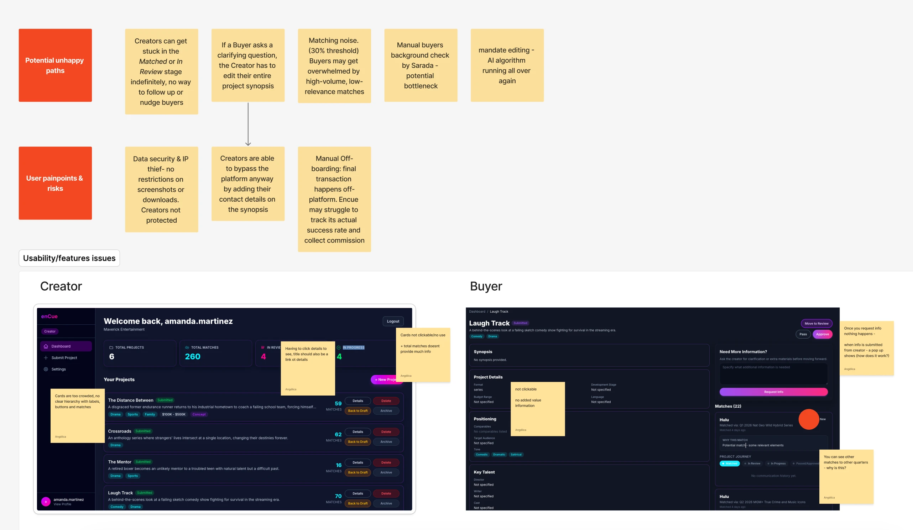

AI Platform for Global Film & TV
An AI-powered platform designed to help creatives around the world take their projects directly to major film and TV networks, reducing reliance on traditional intermediaries and opening access to a global pool of talent.
The gap between the technology and the product
The client approached me at seed stage with an initial MVP and the ambition to prove product-market fit. The product connected two sides of the film and TV industry: Creators, who submit projects, and Buyers, who represent networks looking for specific types of content.
My assessment showed that the challenge went well beyond a visual redesign. The MVP had gaps across both sides of the experience, from how creators submitted and protected their work to how buyers reviewed and matched projects. There were also operational and business risks behind the interface: manual processes, noisy matches, unclear project statuses, limited IP protection and transactions happening outside the platform.
Reframing the problem
I reframed the work around making the product viable as a two-sided platform: improving the experience for both users, reducing operational friction and creating a stronger foundation for proving the business model.
Auditing the MVP
- Prioritised pain points and risks
- Unhappy paths and edge cases
- Product risks & opportunities

I gave the agent defined tasks and asked it to navigate the product independently, flagging friction, unclear states, dead ends and unexpected behaviour.
- Task-level usability findings
- Friction points and broken flows
- Patterns to investigate further
Task: Buyer reviews a matched project
Login → Buyer dashboard → Review matches → Open project → Review match → Explore project → Contact Creator
- ✓Matches are easy to locate
- !Match score is prominent, but its meaning is unclear
- !Buyer needs to move between the project summary and mandate to understand the match
- !Supporting evidence is not clearly linked to individual criteria
- !A 72% match suggests relevance, but does not explain what drove the score
- !No clear indication of missing or conflicting criteria
AI helped me cover the surface quickly, while focused manual research helped me understand what was underneath it. The analysis revealed gaps across the product: fragmented journeys, unclear matching, inconsistent design and communication risks.
Fixing the foundations
I prioritised broken flows and missing feedback first, then addressed trust in the matching and visual consistency. I restructured the experience around Creator and Buyer journeys, replaced fragmented AI-generated screens with a unified design system, and redesigned matching around three principles:
1. Show why. Every match connects mandate criteria to supporting evidence, so users can understand and verify the result.
2. Be honest about confidence. Clear indicators distinguish strong matches from borderline ones, helping users know where to look more closely.
3. Keep people in control. Users can challenge or reject a match. AI supports the decision; people remain accountable for it.
I reviewed each step with the client team, keeping product, brand and investor materials aligned throughout.
From fragmented MVP to a credible product
Much of the MVP had been generated by AI tools, and it showed. Screens were inconsistent, states contradicted each other, and nothing looked like a product a network executive would trust with a slate decision. For an industry that runs on taste and relationships, that was a real problem.I cut the journeys back to what Creators and Buyers actually needed to do, made every match explain itself and gave the platform one coherent visual language.
Building a credible brand
The redesign went beyond the interface. Through interviews and brand strategy workshops with the client, I helped define the brand’s positioning, personality and visual direction. I translated this into a bespoke identity, including the logo, typography, colour palette and brand guidelines, bringing a more distinctive and human feel to the platform and its communications.
Ready for bigger conversations
The redesigned product and investor narrative supported the company’s fundraising effort.
Product experience, brand identity and investor materials aligned around a clearer, more credible proposition.
The work gave the company a stronger foundation for conversations with enterprise stakeholders and investors, bringing the product closer to the level of polish and consistency expected of an enterprise-ready platform.